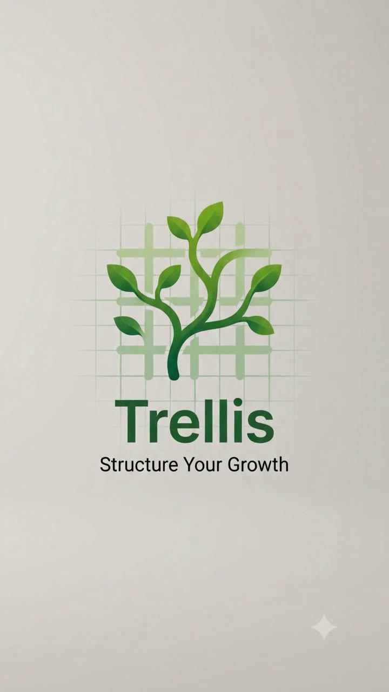

Szokások, kalória, edzés, bibliaolvasás, ciklus, napló és közös listák — egyetlen appban, a telefonodon.
Letöltés AndroidraA Trellis
A növény sem magától jut fel a falra — kell mellé egy rács, ami tartja. A Trellis ez a rács a hétköznapjaidhoz: egy helyen követed, amit eszel, amit edzel, amit olvasol és amit szokássá akarsz tenni, és az app megmutatja, hogyan függnek össze.
Modulok
Kilenc modul — mindegyiket akkor kapcsolod be, amikor szükséged van rá.
Célok saját mércével és ütemezéssel, bepótlás, sorozatok, céltervező és teendőlista.
Étkezési napló makrókkal, vonalkód-olvasó, receptek, tányérfotó, nasi-arány és heti keret.
Testsúly és testmérések, reális ütem, böjtnapló, és egy terv, ami a naplódhoz igazodik.
Terv és tény külön, szettek élőben, pihenő-óra, lebegő ablak, izomláz és regeneráció.
Olvasási terv a saját tempódra, teljes Károli-szöveg, napi ige, jegyzetek és kvíz.
Menstruációs naptár előrejelzéssel, tünetekkel és jegyzetekkel — visszamenőleg is rögzíthető.
Közérzet, alvás, hangulat és energia pár koppintással — és hogy mi hatott mire.
Bevásárlólista, amit a párod is szerkeszt — élőben, mindkét telefonon —, és közös ételtár a háztartásnak.
A kezdőképernyőn is ott van, ami ma számít: szokások, kalória, teendők.
Telepítés
A Trellis nem a Play Áruházból jön, hanem közvetlenül innen. Emiatt a telefonod egyszer rá fog kérdezni, hogy engedélyezed-e — utána minden a megszokott módon megy.
Frissítés
Az appot nem kell figyelned: ha új verzió jelenik meg, maga szól, és egy gombbal letölti és telepíti. Ehhez sem kell Play Áruház.

Egy szokás, egy étkezés, egy fejezet — a rács kitart, a többi magától nő.
Letöltés Androidra